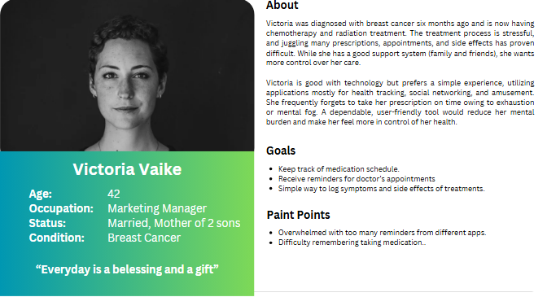
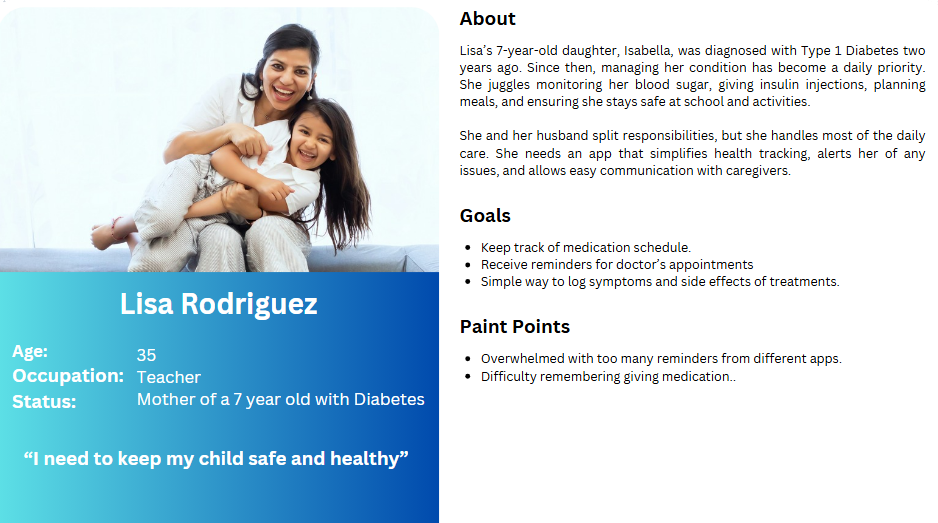
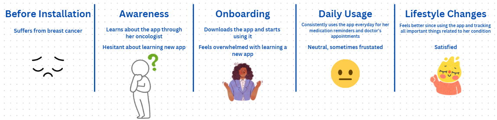

Managing chronic health conditions is a complex process and can be very demanding on a person. It's a process that requires a lot of time, effort, effective medication tracking, and appointment scheduling. This case study explores the UX/UI strategy for a mobile application designed with the goal of helping individuals with chronic conditions manage their health more effectively. Each of these methods of gathering data have benefits, but also present certain drawbacks, making a combined approach of implementing each method most effective for the development of the application.
To ensure the application is designed with the user in mind, it is important to employ proper user research techniques. Understanding the needs of the patients will help a seamless and effective user experience. The methods I would use for this case study include interviews with individuals with chronic conditions and healthcare professionals, surveys, and analyzing UX studies on similar applications.
Interviews are effective tools in gathering data as they allow for a more personal and in-depth understanding of the individuals being interviewed. These conversations can reveal workflow challenges, and specific feature requests. However, interviews can be time consuming and may not always be representative of the entire user base. They can also present some personal biases and may not always be reliable. To remedy the biases, I would structure the questions in a way that is open-ended and allows room for an organic discussion and responses.
Surveys are another excellent tool for gathering a large amount of data, allowing for broad insights into user needs and preferences for the application.However, they can present certain drawbacks. Participants of the survey can provide incomplete answers or dishonest answers which can be due to a multitude of reasons. Furthermore, a bad design of the survey questions can lead to unusable data. To mitigate these issues, I would ensure the survey is well designed and the questions are clear and concise.
Additionally, analyzing other UX case studies on similar apps can provide insightful information on how to implement the main features of the application. By researching reports and existing research, we can determine the best design patterns to have proven to work and implement a version of it to the application to enhance accessibility and engagement on the app. However, these case studies may target the same user group and can also limit innovation in terms of new ideas.
Given this information, the best course of action would be to implement a combined approach of all three methods. This would allow for a more comprehensive application and ensure a well-rounded understanding of individual needs and create a chronic health care application that is simple, functional, appealing, but also meets the requirements of users.
Based on my personal research, I have observed that the most common chronic health conditions are hypertension, arthritis, depression, diabetes, asthma, and cancer among adults older than 20 years old. For the children, the story is very similar where asthma and diabetes are very prevalent. According to the New York State health department, 40% of adults suffer from a chronic disease. This demonstrates the widespread nature of chronic diseases and how many adults have to manage with these long term health conditions. To help ease the pain, many patients have to follow a strict treatment that entails taking medicine as prescribed, scheduling regular checkups with doctors, and living a healthier lifestyle.
In analyzing other case studies, I found that this UX case study called CureU has some similar goals and features that are being implemented for this project. They focus more on a single chronic condition; chronic pain, which limits the amount of features that can be implemented. The design prioritizes pain tracking, learning about chronic pain, and chatting with experts. However, the scope of this project requires the implementation of more features such as appointment scheduling with doctor’s, medication tracking and symptoms tracking related to the medications being taken. Despite the differences in scope, CureU provides users with a simple and pleasant looking design. Applying similar design techniques will help create a more well rounded health companion app for individuals with chronic health conditions.
For the persona’s, I wanted to target a diverse audience by incorporating research findings and representing a broad range of chronic health conditions, age groups, and lifestyles. Additionally, I included a caretaker persona, to reflect the possibility of chronic health conditions requiring the help of others. This is especially relevant for older adults and children, who may depend on others for daily assistance. As a result, I developed the four personas outlined below.
|  | |
|  |
Below is a user journey map of Victoria (from the user persona), outlining her experiences before using the application and also after utilizing the app to help manage her medication, track appointments, and logging symptoms related to the medication. The journey map outlines the interactions with the application, demonstrating her actions, emotions, and pain points throughout the stages of the journey of using the mobile application.
|  |
The wireframes for this case study were created to ensure a seamless experience for the user and implement a blueprint for the development of the prototype. These wireframes provide a foundation for the user testing and iteration, allowing for future improvements in the design and interaction of the app before developing a more complete prototype.
The prototype serves as an interactive representation of the app, integrating all the main features allowing users to interact with the prototype. This prototype will be used for the usability test, allowing us to gather feedback on user interactions, and identifying any weaknesses with the prototype. This will ensure that the final product meets all the requirements of the users.
The main goals of the usability testing will be to test the effectiveness of the main features implemented such as medication reminder, symptom tracking, and appointment scheduling. User feedback will be gathered to evaluate different criteria. Those criteria are usability, clarity, and accessibility. By diagnosing the main strengths and weaknesses of the mobile application based on the feedback, we can make adjustments accordingly and improve the main features of the application.
According to the research, we will recruit 5 participants representing different user groups given that testing 5 people will give us as much information on usability problems as testing more test participants. The participants will include elderly people that are less tech proficient, caregivers managing the health of others, and tech proficient individuals who rely on apps for health tracking. The test will be conducted either remotely through video conference or in-person. The participants chosen for the usability test will be provided with a smartphone with the app prototype installed and screens will be recorded to gather feedback.
For data collection, users will verbalize their thoughts while using the prototype app. Any confusion or frustration will be noted down. To identify task success rate, we will measure the percentage of users who completed each task successfully and how much time it took them to complete it. The usability test will be followed up with a questionnaire asking specific questions about each task. The test will also be recorded which will allow us to review the test more thoroughly and make better insights off the data collected.
Here is a sample questionaire that will be used to gather feedback from the participants:Post Usability Test Questionaire
For the success criteria, I want to achieve the goals of having a 80% success rate on the specified task, users complete the tasks within a given time, and also receive positive feedback from users on the usability test through the questionnaire. These goals are very reasonable and attainable given the scope of the project. By setting these goals, I can provide an intuitive and effective user experience. Furthermore, trying to attain this success rate will only provide great insight into potential strengths and weaknesses of the application and demonstrate areas of improvement in how the features implemented can be better developed. If the success criteria is met, it will show that the UX strategy implemented in developing the app was successful and that the design aligns with the focus group.
User feedback is a crucial step in the development of an app. This is to ensure that the design meets the proper requirements of the intended user group. Based on the data collected through the usability testing and questionnaire, we can make the necessary improvements to the UI/UX to enhance aspects of the application. Once these changes are made to the app, further testing will be done iteratively. This iterative process will ensure that the app meets the defined success criteria as outlined above, guaranteeing a smooth and intuitive design for the users. By improving the app based on user feedback, the app will only get better and improve leading to higher user satisfaction and app retention.
The UI/UX design process played a crucial part in identifying user needs and improving the product to fit those user needs. A big part of the project was conducting user research which provided great insight on individuals with chronic health conditions, allowing to create a prototype that is tailored to meeting the needs of those individuals.
Throughout the project and design process, several challenges emerged. One of the primary challenges was creating personas that really represented the target audience. This was addressed by doing more research on individuals with chronic health conditions and making personas based on that information collected. Furthermore, another challenge faced was the design of the wireframes in a way that offered simplicity but also functionality for the users. The initial designs were too complex and offered too many features that could be overwhelming for users, especially one that is older. To resolve this, significant changes were made, focusing on simplifying the design while also adding more functionality.
Overall, this project demonstrated the importance of a user centered design process in the making of applications. By developing features with the user in focus, better applications can be developed that offer more functionalities that are actually useful for the user. This ensures that the final product meets the requirements of the target audience, leading to improved user satisfaction.